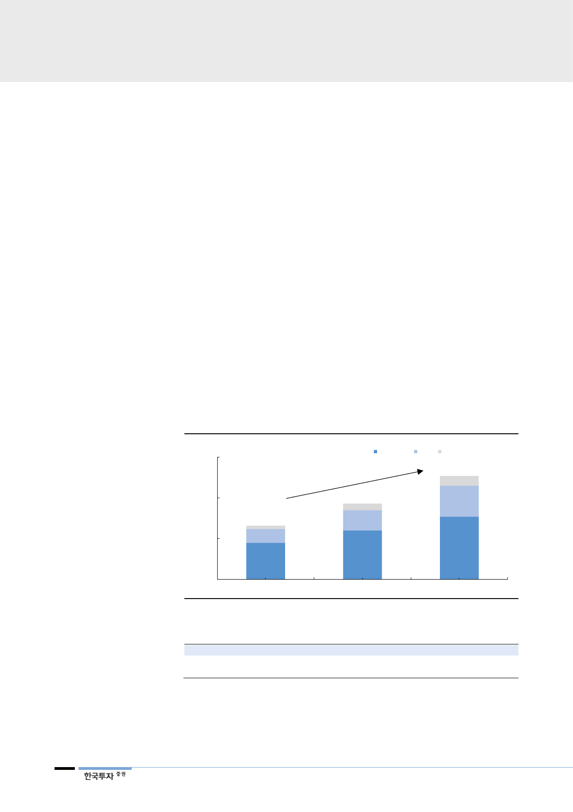

III. SK바이오텍
글로벌 CDMO 아웃소싱
수요 급격히 증가 중
1. 글로벌 CDMO 사업현황
SK는 CDMO 사업체 SK바이오텍 지분을 100% 보유 중이다. CDMO(Contract
Development and Manufacturing Organization)란 항체의약품 위탁생산(CMO)
과 위탁개발(CDO)이 모두 가능한 바이오 업체이다. 신약개발에 집중하기 위해
글로벌 빅파마들은 생산 외주를 확대, 신생 제약사의 신약개발이 활발해지면서
CDMO 아웃소싱 수요가 급격히 증가 중이다.
글로벌 경구용 CDMO 시장
2015~2020년 연평균 2.5%
성장 전망
Specialty 신약, 제네릭 의약품 소비 증가, 제약업체의 아웃소싱 증가로 글로벌
CDMO(경구용 기준) 시장은 2015년 77억달러에서 2020년 87억달러로 연평균
2.5% 성장할 전망이다. CDMO시장은 4천여개의 업체들이 존재하나 기술력과 캐
파를 갖춘 top-tier 업체는 3개 정도로 대규모 자본, 높은 기술이 동시에 요구된
다. 성공적인 CDMO 도약을 위해서는 임상 초기 단계부터 상업수주 lock-
in(Development-임상물량공급-상업화 스케일업) 가능 여부, FDA 등 글로벌
규제 기관의 기준에 부합하는 기술력, 대형 고객사 대응을 위한 캐파가 필수적이
다. 대규모 자본력, 중장기 투자, CEO의 의지가 핵심인 만큼 SK가 강점을 드러
낼 수 있는 사업이다.
[그림 10] 글로벌 CDMO 시장 전망
(십억달러)
150
100
66
4
50
17
45
0
2015
자료: SK, 한국투자증권
합성API DP 바이오API 합계
127
+6.8%
12
93
38
8
25
77
60
2020F
2025F
<표 10> 의약품 품목별 CDMO 시장 전망
제품 형태
시장규모(2015 년→2020 년)
연평균성장률(2015~2020 년)
주사제
6.5 → 12.8
14.6
자료: SK, 한국투자증권
경구제
7.7 → 8.7
2.5
(단위: 십억달러, %)
기타
2.7 → 3.0
1.3
12